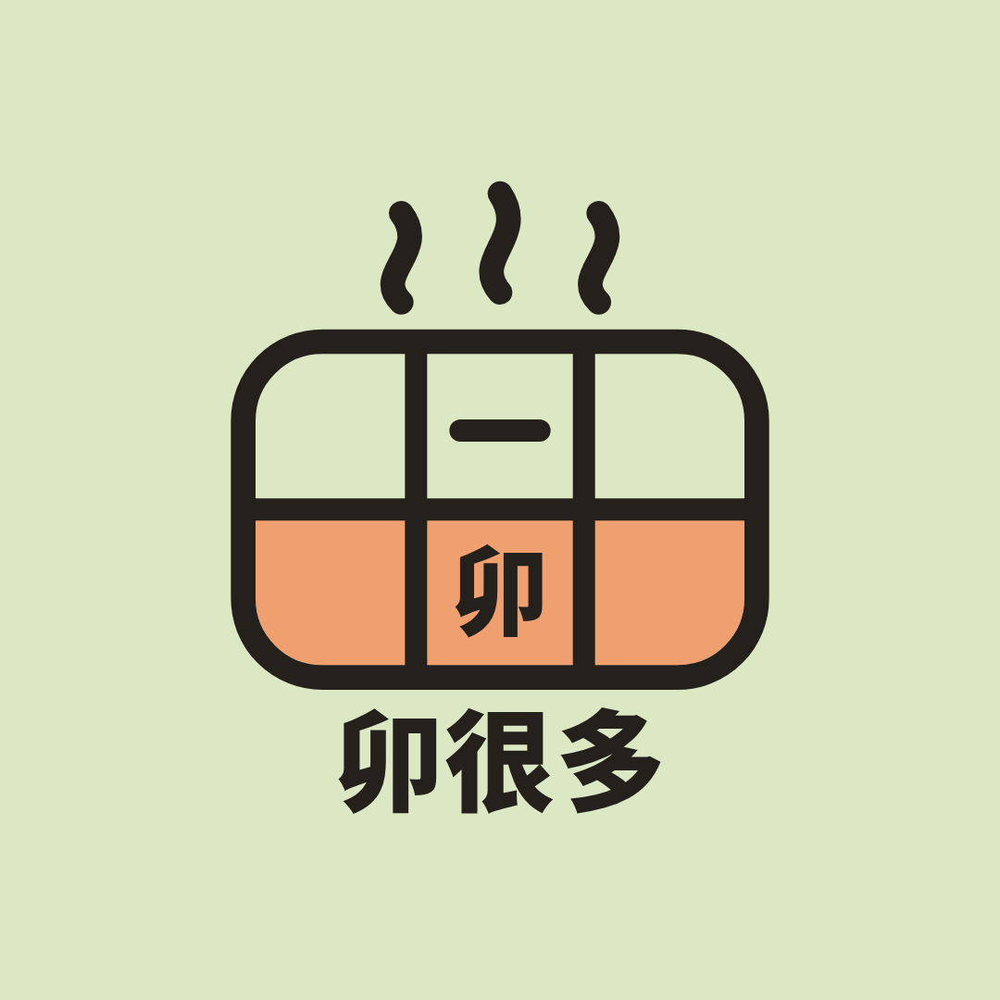
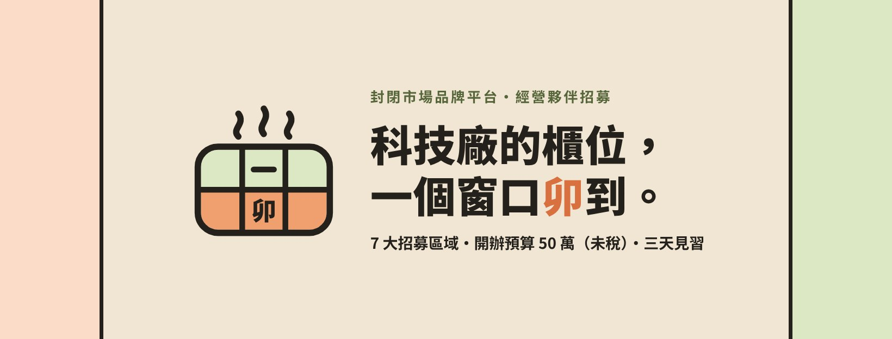

不能寫、不能拍
- 不寫收益承諾：不寫「月賺」「保證回本」「穩賺」，也不寫回收期（公平交易法第 21 條）。
- 不公開業主名稱與上游條件：只寫區域與品類。
- 不在廠區內拍攝或打卡：科技廠受資安規範限制，素材在廠外、中央廚房、逢甲基地拍。
- 健康文案只寫可驗證數字（熱量、蛋白質、鈉），不寫減重、降血糖、排毒（食安法第 28 條）。
- 夥伴或員工入鏡要先取得書面同意。
- 廣告文字避免寫成徵才（「徵」「職缺」「月薪」），以免被 Meta 歸入就業類廣告而限制受眾。
卯很多 MAO MANY · 招商官方帳號
三個平台共用一套六格便當視覺，所有數字與官網一致。目標只有一個：把看到的人帶進 LINE，進入見習與洽談流程。
ACCOUNTS
Threads 用 Instagram 帳號登入，帳號名稱會跟 IG 相同。三個平台的 ID 建議統一為 maomany.partner；註冊時若已被使用，改用 maomany_partner。
PREVIEW
IG 網格依 01 到 09 排列。因為最新貼文排在左上角，首發要倒過來發：先發 09，最後發 01。


LAUNCH · 9 POSTS
每張圖都有 IG 與 Facebook 兩種文案。IG 短、帶 hashtag，引導看個人檔案連結；Facebook 可以放完整說明與連結。
CAROUSEL
5 張一組，數字取自官網試算：建議準備資金＝開辦預算 50 萬＋營業稅 2 萬＋營運周轉。
STORIES & HIGHLIGHTS
見習梯次範本每週更新日期與名額。精選動態六個分類：條件、預算、品牌、區域、街邊店、見習；IG 只會顯示圖片中間的圓形。
THREADS
Threads 以文字對話為主，語氣比 IG 更直接，每則結尾丟一個問題讓人回覆。單則 500 字以內。
4-WEEK PLAN
以 2026 年 10 月 19 日（一）為第 1 天。每週固定：IG 3 則、Facebook 3 則、Threads 5 則、限時動態 2 則。
| 日期 | 平台 | 格式 | 內容 |
|---|
FUNNEL & RULES